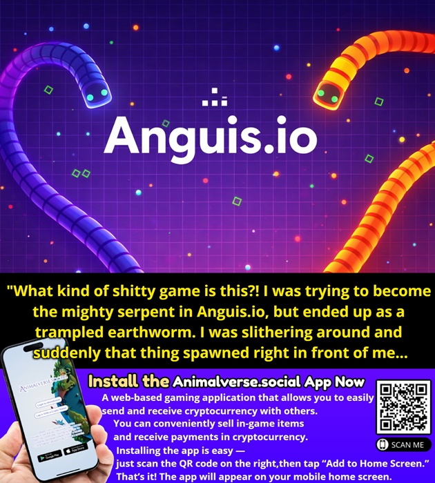

Introduction
Anguis.io is a highly competitive multiplayer snake game that challenges you to slither your way to supremacy in a vibrant, shared arena. Unlike classic single-player snake games, Anguis.io drops you into a high-stakes battleground filled with players from around the globe. The core objective is simple yet thrilling: devour scattered orbs to grow longer and become the most formidable serpent on the leaderboard. What makes Anguis.io unique is its intense collision mechanics and strategic growth system. You aren't just avoiding walls; you are actively outmaneuvering human opponents, using your growing mass to encircle rivals and claim their territory. Players love the game for its perfect balance of risk and reward, where every move counts and the tension of navigating a crowded arena delivers endless replayability and adrenaline-pumping action.
Getting Started

Starting your journey in Anguis.io is incredibly straightforward. Simply visit the official website and enter the arena. You will spawn as a small, nimble snake. The primary controls rely on your mouse or touch input to steer your serpent's head in the direction you want to go. Your initial focus should be on survival and basic growth. Navigate around the arena to collect scattered food orbs, which will gradually increase your snake's length and mass. As a beginner, your main priority is avoiding head-on collisions with other players, as crashing your head into another snake's body will result in an instant end to your run. However, remember that your growing body acts as a deadly obstacle for others. Once you have gathered enough orbs to gain some size, you can start thinking about offense. Try to position your elongated body in the path of smaller snakes, forcing them to crash into you so you can absorb their mass and accelerate your climb up the global leaderboard.
Basic Tips
To survive your early matches in Anguis.io, keep these essential tips in mind. First, prioritize wide turns over sharp angles; because your snake is long, sharp turns increase the risk of accidentally crashing into your own body or walking into an opponent. Second, use the edges of the arena to your advantage. While the center has more food, it is also the most dangerous due to high player traffic. Farming orbs near the borders is safer for beginners. Third, always keep an eye on the minimap or your peripheral vision to track the trajectories of larger snakes. If a massive snake is approaching, retreat early rather than trying to squeeze through a tiny gap. Fourth, when you are still relatively small, do not attempt to encircle larger players. Instead, focus on darting through the gaps in their bodies to steal food directly in front of them. Finally, if you die, immediately respawn and start collecting orbs again; hesitation is your enemy in this fast-paced multiplayer environment.
Advanced Strategies

Once you have mastered basic survival, it is time to implement advanced strategies to dominate the Anguis.io arena. The most effective tactic is the encirclement trap. When you are significantly larger than a nearby opponent, use your speed and length to loop around them, creating a closing perimeter. Force the smaller snake into the center of your coil, leaving them no escape but to crash into your body, allowing you to claim their mass. Another powerful strategy is the head-fake ambush. Approach a rival from a blind spot, such as just behind their body, and suddenly cut across their path. This forces them into a panic reaction, often causing them to crash into you or another player. Additionally, practice body blocking. If you see two opponents fighting over a dense cluster of orbs, position your snake's body between them and the food. This denies them resources while you safely consume the orbs yourself, starving them out without directly engaging in a risky head-on collision.
Pro Tips

To separate yourself from good players and become a true Anguis.io legend, master these pro-level techniques. First, master the art of the loose coil. When setting an encirclement trap, do not make your body perfectly tight; leave just enough space to tempt smaller snakes into entering your trap, only to close the gap at the last microsecond. Second, utilize mass dumping strategically. If you are being chased by a massive snake and cannot escape, intentionally coil tightly to force a crash, sacrificing a small portion of your tail to escape and live to fight another day. Third, track the leaderboard not just for rank, but to identify the largest threats on the map. Anticipate their movements, as their massive size makes them slower to turn, allowing you to easily outmaneuver their head while avoiding their trailing body.
Conclusion
Anguis.io offers a thrilling, high-stakes multiplayer experience that perfectly blends quick reflexes with deep strategic thinking. Whether you are carefully farming orbs to grow or executing a massive encirclement trap to claim your rivals' mass, every match is a unique battle for supremacy. Jump into the arena today, refine your slithering skills, and see if you have what it takes to conquer the leaderboard and become the ultimate serpent!